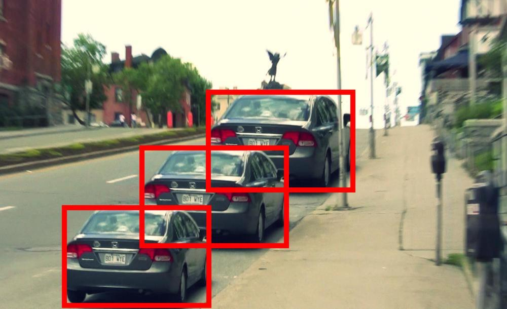
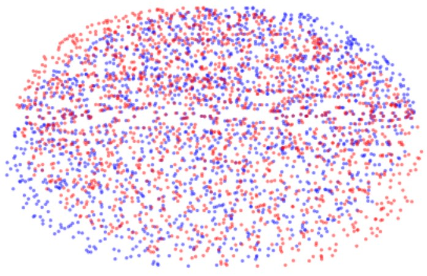
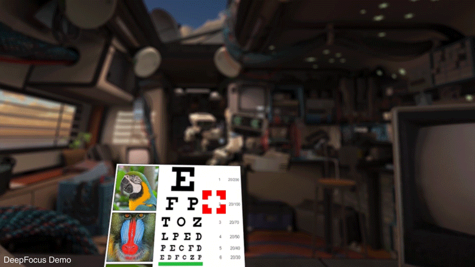

|
|
Royal Society Scientific Meeting New Approaches to 3D Vision (Nov 2021)
Leading approaches to computer vision (SLAM: simultaneous mapping and localization), animal navigation (cognitive maps), and human vision (optimal cue integration), start from the assumption that the aim of 3D vision is to produce a metric reconstruction of the environment. Recent advances in machine learning, single-cell recording in animals, virtual reality, and visuomotor control, all challenge this assumption. The purpose of this meeting is to bring these different disciplines together to formulate a coherent alternative approach to 3D vision.
|
|

|
Linton, P. (2021). ‘V1 as an Egocentric Cognitive Map’, Neuroscience of Consciousness
In Linton (2020) and Linton (2021) I find that vergence has either a negligible or no effect on size and distance perception. The question is how to reconcile this finding with the processing of the vergence signal in the primary visual cortex (V1). I argue that we need to distinguish between perceptual and cognitive processing in V1, and draw an analogy with findings on non-visual processing in the mouse V1.
Special issue on Consciousness Science and Its Theories. Contributors include Stanislas Dehaene, Catherine Tallon-Baudry, Biyu Jade He, and Axel Cleeremans.
|
|

|
Linton, P., (2021). ‘Conflicting shape percepts explained by perception cognition distinction’, PNAS, 118 (10) e2024195118
Debate in PNAS with Jorge Morales, Axel Bax, and Chaz Firestone on 3D shape processing in response to Morales et al. (2020). ‘Sustained representation of perspectival shape’, PNAS, 117(26), 14873-82.
Provided inspiration for new experiments in Morales et al. (2021). ‘Reply to Linton: Perspectival interference up close’, PNAS, 118 (28) e2025440118.
|
|

|
PhD Internship on the DeepFocus Team at Facebook Reality Labs
Manager: Marina Zannoli,
Collaborator: Lei Xiao,
Team Lead: Douglas Lanman
Collaborated closely with researchers in deep learning, computer graphics, and optics, as part of a small interdisciplinary team, using artificial intelligence for real-time gaze-contingent defocus blur rendering.
Used principles of vision science to inform the development of neural network.
Ran user studies to evaluate neural network and make actionable recommendations.
|
|
{kind=link}